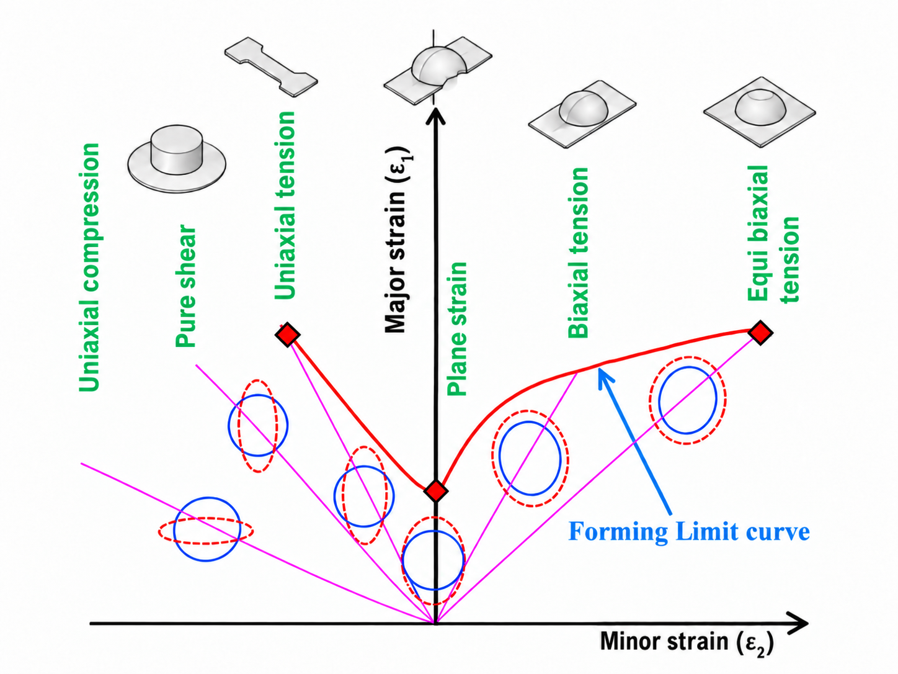
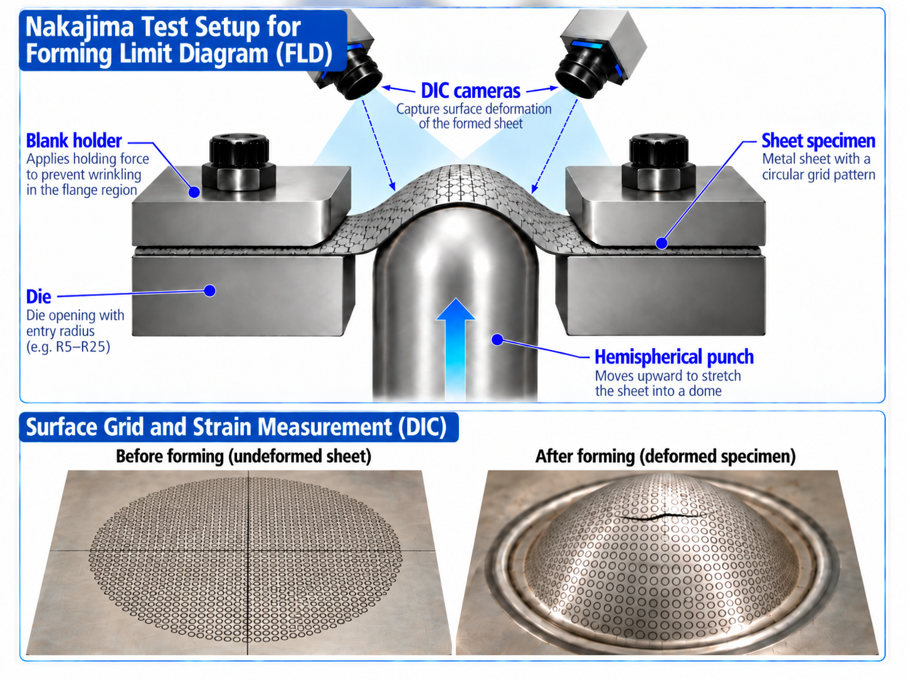

From Nakajima testing to the forming limit curve
Experimental forming-limit curves are built from multiple sheet-forming tests. When test data is not yet available, the MakeCoTech M–K / FLD Explorer can provide a numerical engineering estimate for screening and sensitivity studies.
Why use a Forming Limit Diagram?
A sheet can look safe in a conventional stress or strain plot and still be close to localized necking. The Forming Limit Diagram (FLD) brings the two in-plane principal strains together and shows how much deformation the sheet can sustain under different strain paths.
The horizontal axis is the minor strain ε₂; the vertical axis is the major strain ε₁. The forming limit curve (FLC) separates combinations of strain that are generally considered acceptable from combinations associated with localized necking. The left-hand side covers negative minor strain states such as drawing and uniaxial tension; the right-hand side covers positive minor strain states progressing toward biaxial stretching.

The FLD is not one material number. It is a curve built from several strain paths, and the minimum is typically close to plane strain where ε₂ ≈ 0.
How is an experimental FLC obtained?
In a Nakajima-type test, a hemispherical punch stretches sheet specimens with different widths or geometries. Changing the specimen geometry changes the strain path. A surface grid or digital image correlation (DIC) is used to determine the local principal strains as the sheet approaches localized necking.

A narrow specimen tends toward a negative minor strain, an intermediate specimen can approach plane strain, and a wide or nearly full blank produces positive minor strain and biaxial stretching. The measured limiting strains from these different tests are assembled into the experimental forming limit curve.
Material cards, supplier data and legacy databases do not always include an FLD. Running a complete Nakajima campaign also requires specimens, tooling, optical measurement and interpretation.
MakeCoTech M–K / FLD Explorer v1.3.5 is intended to provide an estimated FLC from constitutive inputs using the Marciniak–Kuczynski approach. The tool scans strain paths and groove orientations, follows the competition between the nominal sheet and an initial imperfection, and identifies the onset of localization.
What does the M–K model actually predict?
The M–K concept assumes that the sheet contains a small initial imperfection, commonly represented as a narrow band or groove with slightly reduced thickness. Under loading, the nominal region and the imperfection region must remain mechanically compatible and in equilibrium. If the imperfect region begins to deform much faster than the surrounding sheet, strain localizes and the corresponding major/minor strain state is taken as the forming limit.
The initial imperfection factor f₀ is therefore important. The predicted curve also depends strongly on the constitutive description used for the sheet: yield surface, hardening law, anisotropy, strain-rate sensitivity and strain-path history can all shift the predicted limit.
How reliable is M–K compared with experimental FLD data?
M–K is one of the most widely used theoretical frameworks for predicting forming-limit curves, but it is not a universal replacement for an experiment. Reviews of the method show that it can reproduce experimental trends well, and individual studies report good agreement when the constitutive model and calibration are appropriate. At the same time, the prediction is sensitive to the assumed imperfection and to the material model used.
Why can two M–K predictions differ?
Yield criterion
Von Mises, Hill-type and advanced anisotropic yield functions can produce noticeably different FLCs.
Hardening law
Swift, Voce and combined hardening assumptions change post-yield response and therefore localization.
Imperfection factor f₀
The initial groove depth is not generally known directly. Uncalibrated choices can shift the absolute level of the FLC.
Strain-rate & path effects
Rate sensitivity and nonlinear strain histories can change forming limits and should be included when relevant.
Best practice for the MakeCoTech tool: if no experimental FLD is available, present the result as an uncalibrated estimate and run a sensitivity range for f₀. If one reliable experimental point is available—especially near plane strain—it can be used to calibrate f₀ before predicting the rest of the curve.
Important: a visually plausible FLC is not proof that the material is represented correctly. The M–K curve should be treated as a model prediction whose credibility depends on the quality of the constitutive inputs and validation data.
From missing FLC to an engineering decision
| Available data | Recommended use of M–K | Confidence |
|---|---|---|
| Stress–strain curve only | Generate a preliminary FLC and perform f₀ sensitivity. Use for screening, not qualification. | Low–moderate |
| Stress–strain + r-values / anisotropy | Use an anisotropic yield law and compare sensitivity to hardening assumptions. | Moderate |
| One experimental forming-limit point | Calibrate f₀ to the measured point, then predict the remaining strain paths. | Moderate–good |
| Several experimental FLD points | Validate the complete predicted curve and use M–K to interpolate, investigate parameters or study alternate paths. | Good for the validated domain |
Technical background
Banabic, D., Kami, A., Comsa, D.-S., Eyckens, P. “Developments of the Marciniak–Kuczynski model for sheet metal formability: A review.” Journal of Materials Processing Technology, 287 (2021), 116446. DOI: 10.1016/j.jmatprotec.2019.116446.
Signorelli, J.W., Bertinetti, M.A., Roatta, A. “A review of recent investigations using the Marciniak–Kuczynski technique in conjunction with crystal plasticity models.” Journal of Materials Processing Technology, 287 (2021), 116517.
SIMULIA / Abaqus documentation: Marciniak–Kuczynski (M–K) damage criterion for Abaqus/Explicit.
The MakeCoTech M–K / FLD Curve Builder is intended for education, engineering exploration and preliminary estimation. Results should be validated against appropriate experimental data before use in safety-critical or production decisions.